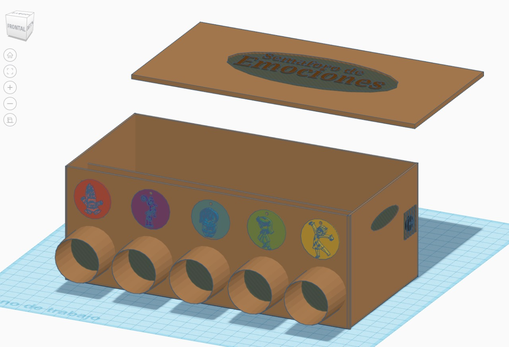
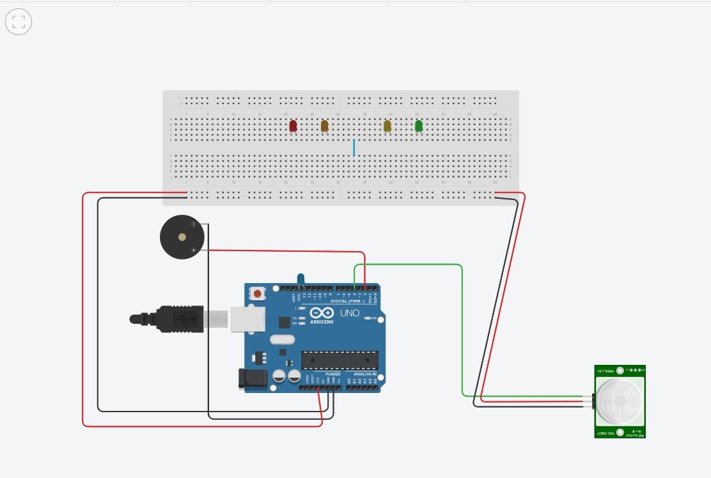

Justificación
Problemática
Es importante saber que en nuestro país, se han registrado más de 40 mil casos de violencia en los colegios en todo el país. El 55% de estos casos se dio entre los alumnos de nivel secundario. Según el programa SíseVe del ministerio de educación (Minedu, 2022).
Introducción
Nuestra idea es crear un sistema de recolección emocional para niños, estaremos enfocados en estudiantes de 6 a 11 años, que sean capaces de reconocer su sentir y no tengan impedimentos ni vergüenza al expresar lo que sienten. Son estuantes de colegios privados, aunque apuntamos a que también se pueda implementar en colegios públicos.
El funcionamiento lógico de nuestro producto, comienza desde que el niño (usuario) acerca su mano a la emoción que tienen en el momento de ingresar y/o salir del salón de clase. Al detectar el movimiento, el semáforo responderá con un sonido y la luz correspondiente a la emoción, como respuesta de haber entendido el sentir del niño.
El diseño principal toma de referencia partes importantes y representativas de los semáforos comunes, estos son: las luces de colores, así como los colores de los semáforos representan una acción en específico que la sociedad le pone un significado común, de la misma forma las luces de nuestro semáforo se encenderán en colores representativos de cada emoción, basándonos en la psicología del color, con la intención de que a diferencia de los semáforos de tránsito, que dirigen nuestras acciones, nuestro semáforo actuará en consecuencia a la elección de nuestros usuarios.
Codificación
int pir_pin = 4;
int led_pin = 13;
int buzzer_pin = 2;
void setup()
{
pinMode(pir_pin, INPUT);
pinMode(led_pin, OUTPUT);
pinMode(buzzer_pin, OUTPUT);
Serial.begin(9600);
}
void loop()
{
if(digitalRead(pir_pin) == HIGH)
{
digitalWrite(led_pin, HIGH);
digitalWrite(buzzer_pin, HIGH);
}
else
{
digitalWrite(led_pin, LOW);
digitalWrite(buzzer_pin, LOW);
digitalWrite(pir_pin, LOW);
Serial.println("Modo espera");
}
delay(50);